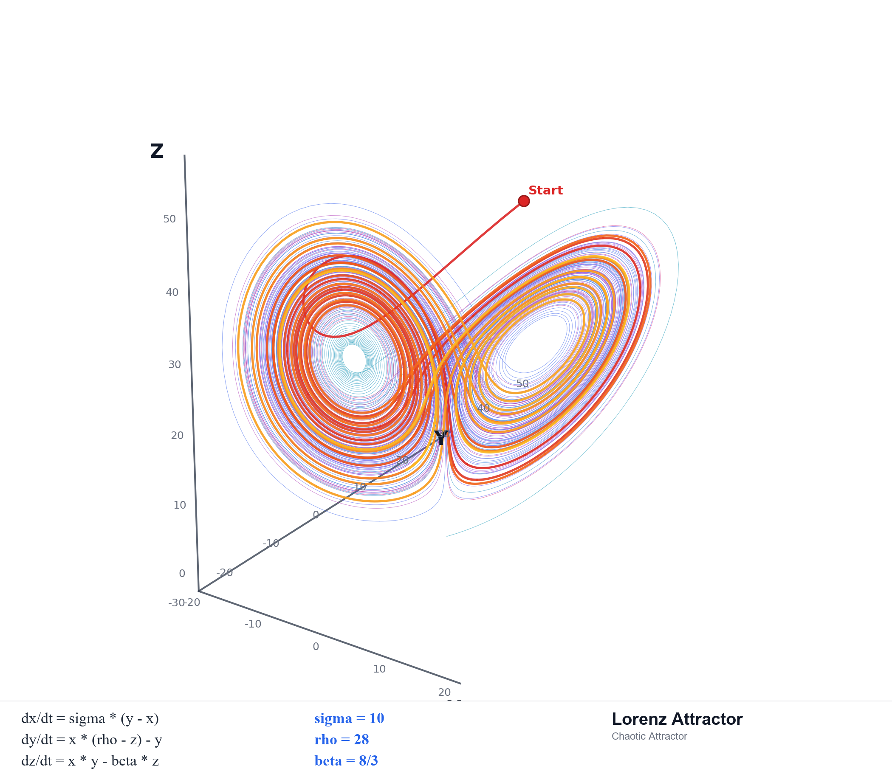

AI 大规模开发的本质：动力系统的受控收敛
canonical | 2026 年 5 月
毕业于清华大学工程物理系，拥有 20 多年软件架构设计经验
致力于将物理学思想体系引入软件工程，原创性地提出可逆计算理论
NOP 低代码平台作者，独立设计并实现后端 nop-entropy 与前端 nop-chaos
本次分享基于 nop-chaos-flux 的真实开发实践——NOP 体系内对 AMIS 方案的下一代升级替代
一个 Schema 驱动的前端运行时和渲染框架
"Schema that executes, not just renders"——Schema 不仅描述 UI，还参与执行为 NOP 低代码体系提供下一代前端运行时基础设施
不是应用框架，不是 UI 组件库围绕 七个原语构建：Template、ScopeRef、Value、Resource、Reaction、Capability、Host Projection
表单、表格、对话框、设计器、验证等都是这七个原语之上的派生系统在 NOP 体系中的位置：nop-chaos 过去基于 AMIS，Flux 是脱离 AMIS 的独立重写
核心流水线
flux-core → flux-formula → flux-compiler → flux-action-core → flux-runtime → flux-react
渲染器族 + 设计器/编辑器 + 共享基础设施 + 诊断工具
口径说明：以上数据均采用 2026-04-26 冻结快照。LOC 为文件总行数，"有效代码"为去空行和纯注释后的行数。
边界越来越明晰
flux-compiler / flux-action-core / flux-runtime 三层分离
结构越来越纯净
CompiledSchemaNode 等过渡结构被清除
验证越来越严格
lint/check 持续收紧，deep audit 多轮过滤传统估计：4-6 名高级前端工程师，3-4 个月 = 12-24 人月
AI 能在极短时间内产出大量代码、测试、文档
AI 会流畅地报告"已经完成"，但行为根本没落地
旧前提在长上下文里不断被复用，整组文件一起偏离真实基线
最危险的地方：不是"写错一段代码"，而是局部都像对的，但整体在持续偏离。
仓库实例：Plan 76 尝试移除本地状态镜像，结果暴露 11 个测试失败——测试也绑定了旧实现时序。

数值积分计算 · 40,000 步轨迹
状态随时间演化、且下一步依赖当前状态的系统。我们关心的是轨迹——从哪里出发，往哪里演化。
状态空间中的一个稳定区域——从足够近的地方出发的轨迹，最终会被它吸引并长期停留在它附近。
状态空间 = 所有合法实现状态的集合
吸引子 = 架构基线允许的结构空间
轨迹 = 每一轮 AI 生成 + 收敛的演化路径
仓库 = 认知的外化
作者认知持有系统模型
仓库主要是表达媒介
系统状态的主要载体转移
仓库 = 系统真相的载体
代码 / diff / logs / tests / docs / audit
人：观察 · 约束 · 校正
仓库产物的新角色：
test / lint / audit = 测量owner doc / plan / closure = 约束logs / history / bugs = 轨迹记录强蓝图 / 长流水线
弱蓝图 / 短流水线
动力系统 / 轨迹控制
按图施工 → 迭代施工 → 控制系统轨迹
吸引子 = 系统长期稳定收敛的结构区域
由七个原语闭合集、编译优先、数据/能力正交、统一渲染器合约、职责分层等基线共同定义固定在 docs/architecture/ 的 owner doc 中，决定每次扩张的合法方向
导航入口
定义现行基线
候选发现
执行收口
开发记忆
案例：CompiledSchemaNode 被移除，因为它已经不属于模板/实例分离的新基线。
专门保留 docs/discussions/
后续 AI 不用凭空猜"为什么这样设计"，也能看到"为什么不能那样设计"
对复杂系统来说，早期理解偏差往往比编码错误更致命
如果只保留最后结论，后来的 AI 看不到哪些前提曾经被证伪过，哪些术语是为了消歧才改的——吸引子就会弱化。
代码生成
文档整理
方案展开
审计候选生成
架构裁决
概念发明
边界重定义
方案淘汰
核心原则：不让同一个上下文既做实现又做收敛裁判。用多个独立 session 交叉验证，人校准收敛标准。
todo list 推动当前执行，Plan 定义整体完成
前者服务于当前会话的工作记忆，后者服务于跨会话、可验证、可审计的工程收敛每个 Plan 至少写清
硬规则：写计划前先核对 live repo，不沿用旧计划和旧 completion note
计划过宽，没人知道什么时候算完成
只记录最后 landing 的内容，不回看整份 plan
接口和类型出现了，就误判语义已经落地
实现者自己把 plan 标成 completed
scope 太宽 → 拆 successor plan
接口存在 ≠ 行为落地 → closure audit 区分
completed 必须来自独立 closure audit
真实案例：Plan 145 在 closure/audit 后将新跟进面分离为 Plan 146——不同结果面混在一起只会制造假关闭。
真实案例：Plan 143 的 closure assumption 被独立审计连续推翻，直到 2026-04-27 live repo 全部过线才标记 completed。
如果这些信息不进仓库，后续 AI 容易重走同样的失败路线——记忆缺失会让吸引子变弱。
梯度（软改进）——标记退化信号，不阻断当前执行，可延后集中处理
warn 级 lint 规则势垒（硬阻断）——越界即失败，不可逾越
check:react19 — 阻断旧 APIcheck:src-artifacts — 阻断构建产物污染check:oversized-code-files — 阻断超大文件check:i18n-keys — 阻断硬编码字符串lint — 包括 react-hooks/exhaustive-deps、react-compiler 等 error 级规则智能审计——覆盖自动化手段无法捕获的语义漂移与结构偏差
deep audit、closure audit，既有硬阻断也有软改进实际数据：2026-04-17 全量审计 28 项初审判定中，经独立复核后 11 项被归为非问题，假阳性率约 39%。
审计终态只允许两种："已解决" 或 "明确无需行动"。禁止"延后""待跟进"等模糊终态。
高信号审计发现会逐步下沉为 lint 规则、check 脚本或测试守卫——把人工收敛力转化为自动化收敛力。
保存的不是 diff，而是排查路径：为什么难定位、先看了什么、排除了哪些假设、最后依据什么确认了问题
按"AI 可消费"设计：以 live cid 为中心，暴露 automation-facing APIinspectByCid() / getSnapshot() / explainNodeValue()
live code path 真经过 • focused/full verification 收口 • 文档同步 • leftover work 归属明确 • 独立 closure audit
completed 不靠声明，靠证据。
① 定义吸引子 → ② AI 扩张 → ③ 实时收敛(lint/check) → ④ 切片收敛 → ⑤ 记忆沉淀(logs) → ⑥ 全局收敛(full repo verification) → ⑦ 审计收敛 → ⑧ 关闭判定(closure audit) → ⑨ 吸引子更新 → ⑩ 下一轮
编译优先+包边界吸引子 → AI 大量实现编译/动作/运行时逻辑 → 审计发现运行时包仍混有 compiler 责任 → 最终拆出 flux-compiler 和 flux-action-core → 三层职责固定为新基线
从过渡结构到真实基线
CompiledSchemaNode 被消除，模板实例化成为真实基线
从"能跑"到"结构稳定"
compiler / action-core / runtime 三层拆分，系统更清晰
不是发现更多，而是让真实问题留下来
通过独立复核排除伪问题，只保留 live repo 中仍成立的偏离信号
"看起来做完了"
"旧前提不断被复用"
"在错误层做了正确修复"
验证行为闭环
恢复正确基线
限制错误方向
AI 大规模开发首先是动力系统问题，而不是治理强化问题。
表面工具确实相似
同样会出现 plan、lint、test、audit、closure，所以很容易被听成“治理加强版”边界：定义禁区，回答“什么不能做”
plan / lint / audit 的作用是防违规、守红线审计：识别并确认偏差，回答“哪里真的偏了”
这些都还停留在“怎么管”的层面，没有定义系统长期应收敛到哪里吸引子：定义合法稳定区，回答“系统应向哪里长期收敛”
吸引子不是更强的边界，而是边界、验证、审计为何成立的前提轨迹：描述 AI 扩张与工程纠偏后的实际演化路径
重点不是某一步是否局部正确，而是整体是否持续落入吸引子附近控制：plan / lint / audit / closure 只在吸引子已定义后才有意义
它们不是第一性原理；它们的作用是把偏离轨迹压回合法稳定区状态空间 → 吸引子 → 轨迹 → 控制
谁定义方向？
冲突时信谁？
怎么发现漂移？
怎么保留记忆？
怎么判定完成？
五个问题都有答案，闭环就成立；答不上来，高速推进只会加速失控。
受训练偏置影响，AI 的收敛目标是它见过的平均解。即使要求它"创新"，给出的往往仍是当前知识体系里的主流方案，而不是真正新的结构观念。
实现 · 展开 · 补全 · 验证 · 整理
在既有知识边界内做高质量执行
核心概念发明 · 边界重定义 · 第一性原理层面的架构突破
这些在当前条件下不会由 AI 自己长出来
案例：ActionScope 与 Data Scope 分离并采用词法作用域——这类方案不是让 AI 自由采样能自然长出来的，必须先由人定义吸引子，再让 AI 在其内收敛执行。
docs/index.mddocs/plans/00-plan-authoring-and-execution-guide.mddocs/discussions/README.mddocs/bugs/00-bug-fix-note-writing-guide.md
docs/analysis/2026-04-17-deep-audit/index.mddocs/references/maintenance-checklist.md
docs/architecture/debugger-runtime.mddocs/articles/flux-architecture-evolution.md
docs/articles/ai-assisted-framework-development-methodology.mddocs/articles/ai-assisted-large-framework-best-practices.mddocs/articles/ai-native-large-system-development-lessons.md
| 指标 | 数值 |
|---|---|
| Workspace packages | 24 |
| TypeScript 文件 | 1,091 |
| TypeScript 总 LOC | 169,372 |
| TypeScript 有效代码 | 146,951 |
| 非测试 source code | 87,829（764 files） |
| 测试 code | 62,820（347 files，ratio 0.72） |
| 文档文件 | 688 个 Markdown |
| 文档行数 | 195,159 LOC |
| 总 commits | 1,336（截至 2026-04-26） |
| 开发周期 | 42 天（41 天活跃） |
| 日均 commits | ~33 |
| 峰值日 commits | 86（Apr 16） |
| Git 变更量 | +595K / -229K（net +366K） |
| 动力学概念 | 软件工程对应 | 仓库实例 |
|---|---|---|
| 吸引子 | 架构基线 | docs/architecture/*.md |
| 扩张力 | AI 生成 | 代码实现、方案展开 |
| 收敛力 | 工程机制 | Plan / lint / test / closure audit |
| 闭环 | 扩张 → 收敛 → 基线更新 | 完整开发周期 |
| 漂移 | 偏离真实基线 | 文档漂移、计划漂移 |
| 势能井 | 自动化验证规则 | eslint error、check 脚本 |
| 记忆 | 跨 session 可追溯上下文 | docs/logs/ / docs/bugs/ |
问题与讨论
微信公众号
微信群